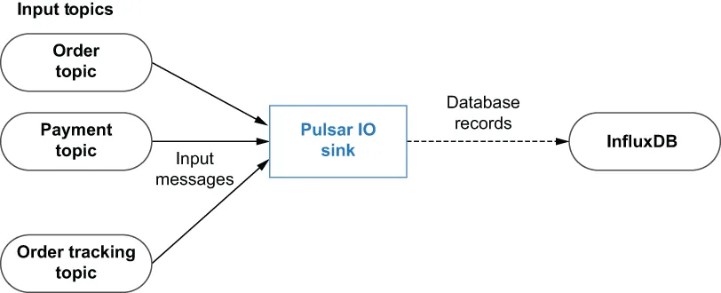

While the Pulsar IO framework already provides a collection of built-in connectors for some of the most popular data systems, it was designed with extensibility in mind, allowing users to add new connectors as new systems and APIs are developed. The programming model behind Pulsar IO Connectors is very straightforward, which greatly simplifies the development process. Pulsar IO sink connectors can receive messages from one or more input topics. Every time a message is published to any of the input topics, the Pulsar sink’s write method is called.
虽然 Pulsar IO 框架已经为一些最流行的数据系统提供了一组内置连接器，但它在设计时就把可扩展性考虑在内，允许用户在新的系统和 API 出现时添加新的连接器。Pulsar IO 连接器背后的编程模型非常直白，这大大简化了开发过程。Pulsar IO sink 连接器可以从一个或多个输入主题接收消息。每当有消息被发布到任一输入主题时，该 Pulsar sink 的 write 方法就会被调用。
The implementation of the write method is responsible for determining how to process the incoming message contents and properties in order to write data to the source system. The Pulsar sink shown in figure 5.2 can use the message contents to determine which database table to insert the record into and then construct and execute the appropriate SQL command to do so.
write 方法的实现负责决定如何处理传入的消息内容和属性，以便把数据写入源系统。图 5.2 中所示的那个 Pulsar sink 可以利用消息内容来判断该把记录插入到哪张数据库表中，然后构造并执行相应的 SQL 命令来完成插入。

Figure 5.2 Overview of the Pulsar IO sink connector programming model
图 5.2 Pulsar IO sink 连接器编程模型概览
The easiest way to create a custom sink connector is to write a Java class that implements the org.apache.pulsar.io.core.Sink interface shown in listing 5.1. The first method defined in the interface is the open method, which is called just once when the sink connector is created and can be used to initialize all the necessary resources (e.g., for a database connector, you can create the JDBC client). The open method also provides a single input parameter, named config, from which you can retrieve all the connector-specific settings (e.g., the database connection URL, username, and password). In addition to the passed-in config object, the Pulsar runtime also provides a SinkContext for the connector that provides access to runtime resources, much like the Context object does in the Pulsar Functions API.
创建一个自定义 sink 连接器最简单的方式，是编写一个实现了清单 5.1 中所示 org.apache.pulsar.io.core.Sink 接口的 Java 类。该接口中定义的第一个方法是 open 方法，它在 sink 连接器被创建时只被调用一次，可用于初始化所有必需的资源（例如，对于一个数据库连接器，你可以创建 JDBC 客户端）。open 方法还提供了一个名为 config 的输入参数，你可以从中取出所有连接器专属的设置（例如数据库连接 URL、用户名和密码）。除了传入的 config 对象之外，Pulsar 运行时还会为该连接器提供一个 SinkContext，它提供对运行时资源的访问，其角色与 Pulsar Functions API 中的 Context 对象非常相似。
Listing 5.1 The Pulsar sink interface
package org.apache.pulsar.io.core;
public interface Sink<T> extends AutoCloseable {
/**
* Open connector with configuration
*
* @param config initialization config
* @param sinkContext
* @throws Exception IO type exceptions when opening a connector
*/
void open(final Map<String, Object> config,
SinkContext sinkContext) throws Exception;
/**
* Write a message to Sink
* @param record record to write to sink
* @throws Exception
*/
void write(Record<T> record) throws Exception;
}
The other method defined in the interface is the write method, which is responsible for consuming messages from the sink’s configured source Pulsar topic and writing the data to the external source system. The write method receives an object that implements the org.apache.pulsar.functions.api.Record interface, which provides information that can be used when processing the incoming message. It is worth pointing out that the sink interface extends the AutoCloseable interface, which includes a close method definition that can be used to release any resources, such as database connections or open file writers, before the connector is stopped.
该接口中定义的另一个方法是 write 方法，它负责从该 sink 所配置的源 Pulsar 主题消费消息，并把数据写入外部的源系统。write 方法接收一个实现了 org.apache.pulsar.functions.api.Record 接口的对象，该对象提供了在处理传入消息时可以使用的信息。值得指出的是，sink 接口继承了 AutoCloseable 接口，后者包含一个 close 方法定义，可用于在连接器被停止之前释放任何资源，例如数据库连接或已打开的文件写入器。
Listing 5.2 The record interface
package org.apache.pulsar.functions.api
public interface Record<T> {
default Optional<String> getTopicName() { ❶
return Optional.empty();
}
default Optional<String> getKey() { ❷
return Optional.empty();
}
T getValue(); ❸
default Optional<Long> getEventTime() { ❹
return Optional.empty();
}
default Optional<String> getPartitionId() { ❺
return Optional.empty();
}
default Optional<Long> getRecordSequence() { ❻
return Optional.empty();
}
default Map<String, String> getProperties() { ❼
return Collections.emptyMap();
}
default void ack() { ❽
}
default void fail() { ❾
}
default Optional<String> getDestinationTopic() { ❿
return Optional.empty();
}
}
❶ If the record originated from a topic, report the topic name.
❶ 如果该记录来自某个主题，则报告该主题的名称。
❷ Return a key if the key has one associated.
❷ 如果该记录有关联的 key，则返回该 key。
❸ Retrieves the actual data of the record
❸ 取出该记录的实际数据
❹ Retrieves the event time of the record from the source
❹ 取出该记录在源端的事件时间
❺ If the record is originated from a partitioned source, return its partition ID. The partition ID will be used as part of the unique identifier by the Pulsar IO runtime to do message deduplication and achieve an exactly-once processing guarantee.
❺ 如果该记录来自一个分区化的源端，则返回它的分区 ID。该分区 ID 会被 Pulsar IO 运行时用作唯一标识符的一部分，以完成消息去重并达成恰好一次的处理保证。
❻ If the record is originated from a sequential source, return its record sequence. The record sequence will be used as part of the unique identi-fier by Pulsar IO runtime to do message deduplication and achieve an exactly-once processing guarantee.
❻ 如果该记录来自一个顺序化的源端，则返回它的记录序号。该记录序号会被 Pulsar IO 运行时用作唯一标识符的一部分，以完成消息去重并达成恰好一次的处理保证。
❼ Retrieves user-defined properties attached to the record
❼ 取出附加在该记录上的用户自定义属性
❽ Acknowledge that the record has been processed.
❽ 确认该记录已被处理。
❾ Indicate to the source system that this record has failed to be processed.
❾ 向源系统表明这条记录处理失败。
❿ To support message routing on a per message basis
❿ 用于支持逐条消息的消息路由
The implementation of the record should also provide two methods: ack and fail. These two methods will be used by the Pulsar IO connector to acknowledge the records that have been processed and fail the records that have failed. Failure to acknowledge or fail messages within the source connector will result in the messages being retained, which will ultimately cause the connector to stop processing due to backpressure.
该记录的实现还应当提供两个方法：ack 和 fail。Pulsar IO 连接器会用这两个方法来确认那些已被处理的记录，以及标记那些处理失败的记录。如果 source 连接器未能及时确认或将消息标记为失败，这些消息就会被保留下来，最终会因背压而导致连接器停止处理。